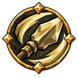
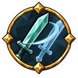
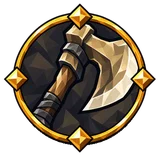
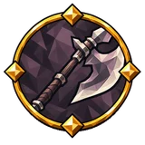
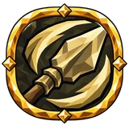
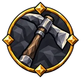

Оглушение¶
Заполнение шкалы оглушения ненадолго прерывает действия цели. Накопление оглушения ускоряет заполнение от ударов; общее накопление недугов на него не действует.
Как это работает¶
Оглушение заполняется рубящим, дробящим, колющим уроном и молнией попадания, в том виде, в каком его получает цель. На пороге — максимальное здоровье × собственный множитель оглушения существа — цель оглушается. Затем шкала убывает: с полной за 5 с у игроков и за 25 с у врагов (мод замедляет это).
Для вашего порога рунный щит считается как здоровье: прибавляется 100% его максимума, и шкала опустошается настолько же быстрее, так что от полной до нуля проходит то же время.
Ваши попадания несут 20% того, что Valheim даёт им как оглушающая сила (настройка сервера); накопление оглушения умножает это, плоское накопление добавляет.
Принудительное оглушение: при срабатывании оглушение от попадания умножается на 100.
Получаемое вами оглушение: × (1 − устойчивость), не больше 85%; снижается на 50%, пока держится ваш рунный щит. Восстановление после оглушения быстрее опустошает вашу шкалу.
Вместе с другими механиками: Бой и строительство.
Ссылаются¶
Дерево навыков¶
Средние узлы¶
| Название | Эффект | |
|---|---|---|
| Вес двуручника | 40% увеличение накопления оглушения двуручным оружием | |
| Вес падающего камня | 120% увеличение накопления оглушения в воздухе | |
| Возвращение в строй | +10% к восстановлению от оглушения | |
| Возвращённая стойка | +10% к восстановлению от оглушения | |
| Второй толчок | 25% увеличение накопления оглушения with aftershocks | |
| Звон в черепе | 40% увеличение накопления оглушения | |
| Звон костей | 15% увеличение дробящего урона 40% увеличение накопления оглушения |
|
| Земля содрогнётся | 40% увеличение накопления оглушения with slams | |
| Короткий ответ | +20% к восстановлению от оглушения при уклонении недавно | |
| Кувалда дренга | 25% увеличение урона дубин при блокировании недавно 40% увеличение накопления оглушения дубинами |
|
| Кулак тролля | 20% увеличение урона кулаков 40% увеличение накопления оглушения кулаками +15 Силы |
|
 |
Накопленная ярость | 80% увеличение накопления оглушения заряженными атаками 30% увеличение урона заряженной атаки |
 |
Невесомый молот | 25% увеличение Phantom strike stagger build-up |
 |
Обух налётчика | 30% увеличение шанса критического удара топоров 40% увеличение накопления оглушения топорами |
| Падение молота | 40% увеличение накопления оглушения 15% увеличение урона в ближнем бою +15 Силы |
|
| Печать кулака | 40% увеличение накопления оглушения кулаками | |
| Пляска костяшек | 5% увеличение скорости атаки кулаков 40% увеличение накопления оглушения кулаками |
|
| Пошатнувшийся строй | 40% увеличение накопления оглушения 15% увеличение отбрасывания при оглушении цели недавно |
|
 |
Рваный размах | 40% увеличение накопления оглушения древковым оружием |
 |
Сила перед бурей | 120% увеличение накопления оглушения заряженными атаками on primary attack hit недавно |
| Синяк великана | 40% увеличение накопления оглушения дубинами | |
| Сокрушительная хватка | 40% увеличение накопления оглушения против обездвиженных врагов 20% увеличение урона против обездвиженных врагов |
|
| Стальной капкан | 30% увеличение шанса критического удара ловушек 40% увеличение накопления оглушения минами и ловушками |
|
 |
Трещина жилы | 40% увеличение накопления оглушения кирками |
| Тяжесть тролля | 40% увеличение накопления оглушения при нанесении урона типа «дробящий» | |
| Тяжёлое ожидание | 80% увеличение накопления оглушения заряженными атаками | |
| Удар колокола | 80% увеличение накопления оглушения при блокировании недавно | |
| Удар плечом к плечу | 20% увеличение урона в ближнем бою атаками 40% увеличение накопления оглушения в ближнем бою |
|
| Упрямый напор | 7.5% уменьшение расход выносливости альтернативной атаки on primary attack hit недавно 60% увеличение накопления оглушения альтернативными атаками on primary attack hit недавно |
|
| Хромота | +10% шанс обездвижить при попадании 40% увеличение накопления оглушения против обездвиженных врагов |
|
| Широкая сеча | 7.5% увеличение скорости атаки альтернативной атаки 10% увеличение области действия эффектов альтернативной атаки 40% увеличение накопления оглушения альтернативными атаками |
|
| Широкий раскол | 10% уменьшение расход выносливости кирок 40% увеличение накопления оглушения кирками |
Мастерства¶
| Вариант | Эффект | |
|---|---|---|
| Накопленный гул | ×0.9 aftershock области действия эффектов 25% увеличение накопления оглушения with aftershocks |
|
| Уголь молота | Добавляет 27% дробящий урона в виде дополнительного огонь урона при следующем попадании после парирования ×0.55 накопления оглушения при следующем попадании после парирования |
Малые узлы¶
| Характеристика | Узлы |
|---|---|
| 16% увеличение накопления оглушения | 16 |
| +4% к восстановлению от оглушения | 10 |
| 32% увеличение накопления оглушения заряженными атаками | 9 |
| 16% увеличение накопления оглушения древковым оружием | 6 |
| 16% увеличение накопления оглушения альтернативными атаками | 6 |
| 16% увеличение накопления оглушения кирками | 5 |
| 48% увеличение накопления оглушения в воздухе | 4 |
| 10% увеличение Phantom strike stagger build-up | 4 |
| 16% увеличение накопления оглушения против обездвиженных врагов | 3 |
| 16% увеличение накопления оглушения with slams | 2 |
| 16% увеличение накопления оглушения дубинами | 2 |
| 16% увеличение накопления оглушения кулаками | 2 |
| 10% увеличение накопления оглушения with aftershocks | 2 |
| +2% шанса оглушения против целей под шоком | 2 |
| 4% увеличение длительности оглушения | 2 |
| 16% увеличение накопления оглушения при нанесении урона типа «дробящий» | 2 |
Предметы¶
Свойства (26)
| Свойство | Тип | Выпадает на | С уровня предмета |
|---|---|---|---|
| #% увеличение Phantom strike stagger build-up | Суффикс | должен быть: самоцвет and самоцвет Ловкости | Луга (1) |
| #% увеличение длительности оглушения | Суффикс | должен быть: оружие; одно из: дубина or кирка | Луга (1) |
| #% увеличение длительности оглушения | Суффикс | должен быть: самоцвет and самоцвет Силы | Луга (1) |
| #% увеличение накопления оглушения | Суффикс | должен быть: оружие; одно из: топор, голые руки, дубина, кирка, древковое оружие, ловушка or кастет | Луга (1) |
| #% увеличение накопления оглушения | Суффикс | должен быть: оружие | Луга (1) |
| #% увеличение накопления оглушения | Суффикс | должен быть: самоцвет and самоцвет Силы | Луга (1) |
| #% увеличение накопления оглушения with aftershocks | Суффикс | должен быть: самоцвет and самоцвет Силы | Луга (1) |
| #% увеличение накопления оглушения with slams | Суффикс | должен быть: самоцвет and самоцвет Силы | Луга (1) |
| #% увеличение накопления оглушения альтернативными атаками | Суффикс | должен быть: оружие; одно из: топор, голые руки, лук, дубина, арбалет, кирка, копьё or кастет | Луга (1) |
| #% увеличение накопления оглушения альтернативными атаками | Суффикс | должен быть: самоцвет and самоцвет Силы | Луга (1) |
| #% увеличение накопления оглушения альтернативными атаками | Суффикс | должен быть: самоцвет and самоцвет Силы и Ловкости | Луга (1) |
| #% увеличение накопления оглушения в воздухе | Суффикс | должен быть: оружие; одно из: магия крови, магия стихий or скипетр | Луга (1) |
| #% увеличение накопления оглушения в воздухе | Суффикс | должен быть: самоцвет and самоцвет Силы | Луга (1) |
| #% увеличение накопления оглушения древковым оружием | Суффикс | должен быть: самоцвет and самоцвет Силы и Интеллекта | Луга (1) |
| #% увеличение накопления оглушения дубинами | Суффикс | должен быть: самоцвет and самоцвет Силы | Луга (1) |
| #% увеличение накопления оглушения заряженными атаками | Суффикс | должен быть: самоцвет and самоцвет Силы | Луга (1) |
| #% увеличение накопления оглушения заряженными атаками | Суффикс | должен быть: самоцвет and самоцвет Силы и Ловкости | Луга (1) |
| #% увеличение накопления оглушения кирками | Суффикс | должен быть: самоцвет and самоцвет Силы | Луга (1) |
| #% увеличение накопления оглушения кулаками | Суффикс | должен быть: самоцвет and самоцвет Ловкости | Луга (1) |
| #% увеличение накопления оглушения при нанесении урона типа «дробящий» | Суффикс | должен быть: оружие; одно из: топор, арбалет or копьё | Луга (1) |
| #% увеличение накопления оглушения при нанесении урона типа «дробящий» | Суффикс | должен быть: самоцвет and самоцвет Силы | Луга (1) |
| #% увеличение накопления оглушения при нанесении урона типа «дробящий» | Суффикс | должен быть: самоцвет and самоцвет Силы и Ловкости | Луга (1) |
| #% увеличение накопления оглушения против обездвиженных врагов | Суффикс | должен быть: самоцвет and самоцвет Ловкости и Интеллекта | Луга (1) |
| +#% к восстановлению от оглушения | Суффикс | должен быть: самоцвет and самоцвет Силы | Луга (1) |
| +#% к восстановлению от оглушения | Суффикс | должен быть: самоцвет and самоцвет Силы и Ловкости | Луга (1) |
| +#% шанса оглушения против целей под шоком | Суффикс | должен быть: самоцвет and самоцвет Интеллекта | Луга (1) |
Упоминается в¶
- Дробящий урон
- Комбо
- Недуг
- Оглушающая сила
- Парирование
- Принудительное оглушение
- Урон молнией
- Устойчивость
- Шок
Данные из Path of Valheiman 5.3.2, извлечены 2026-10-24.